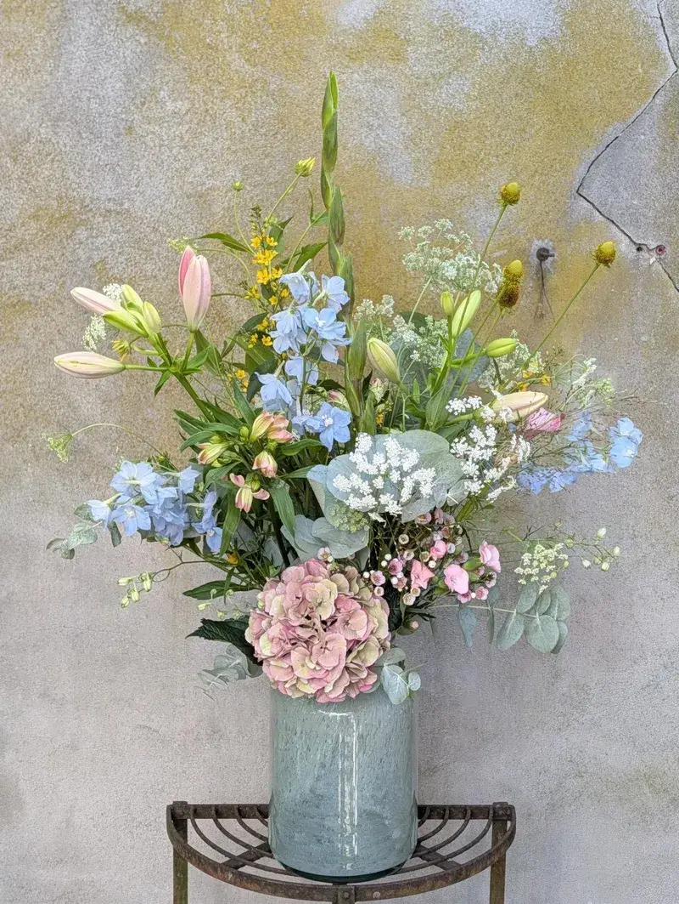
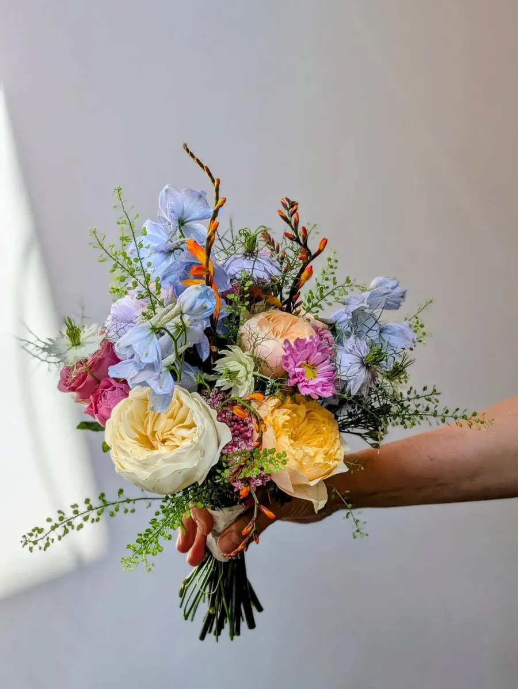
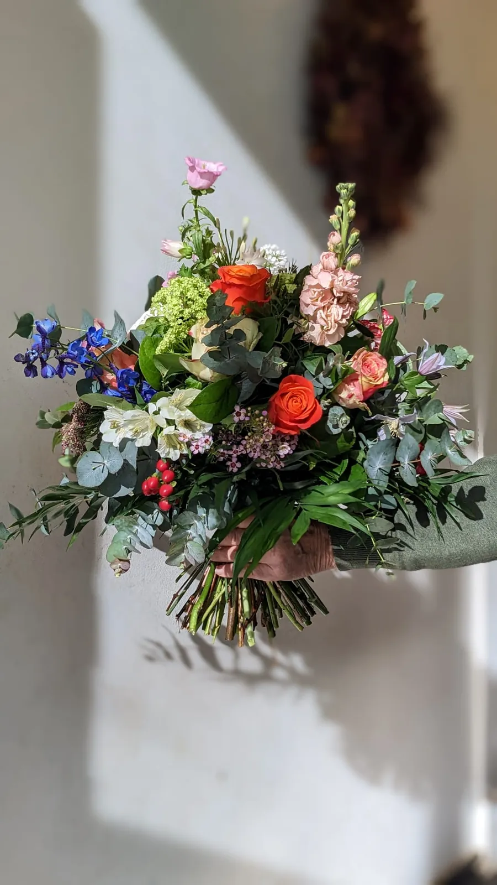
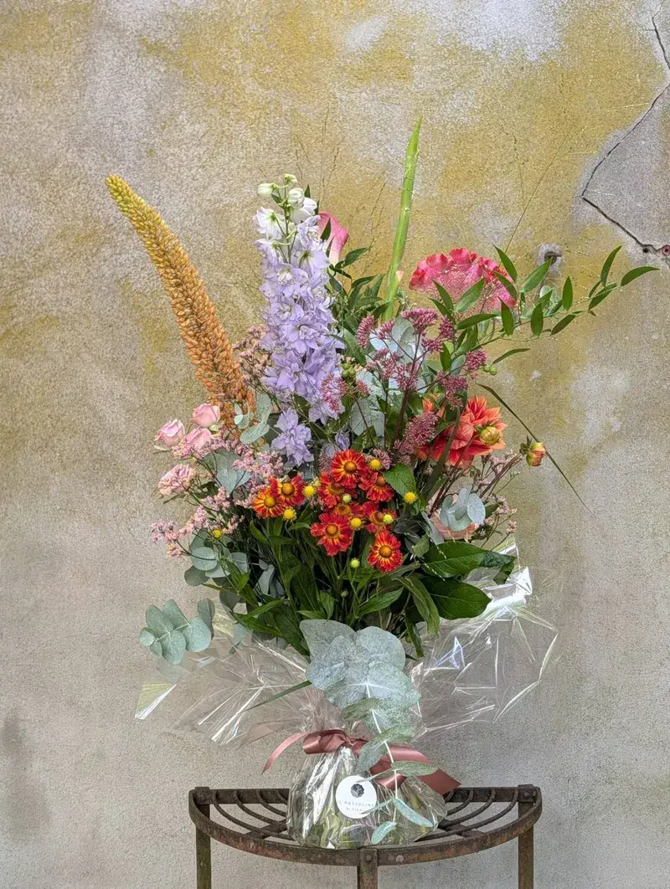
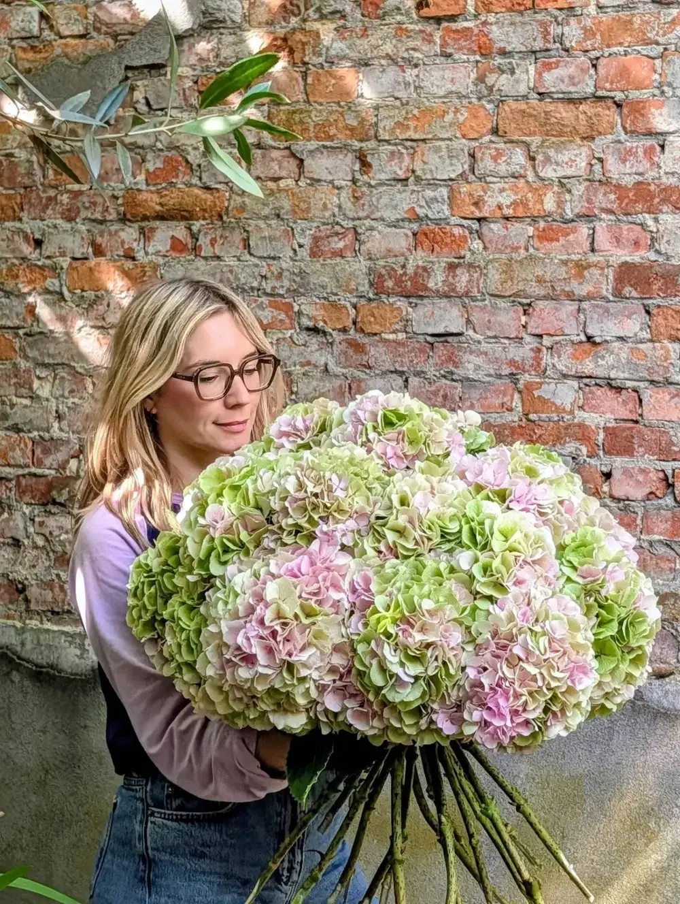
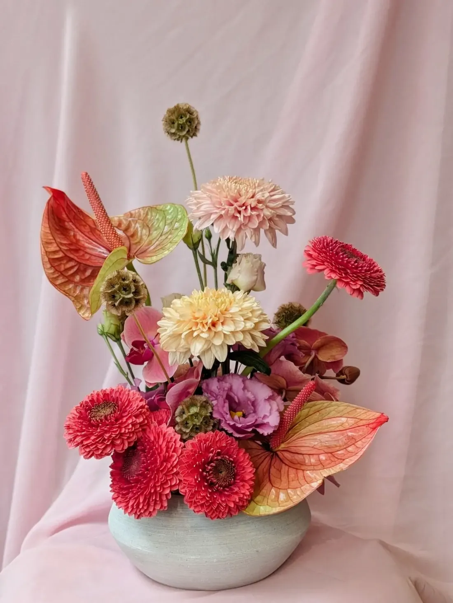
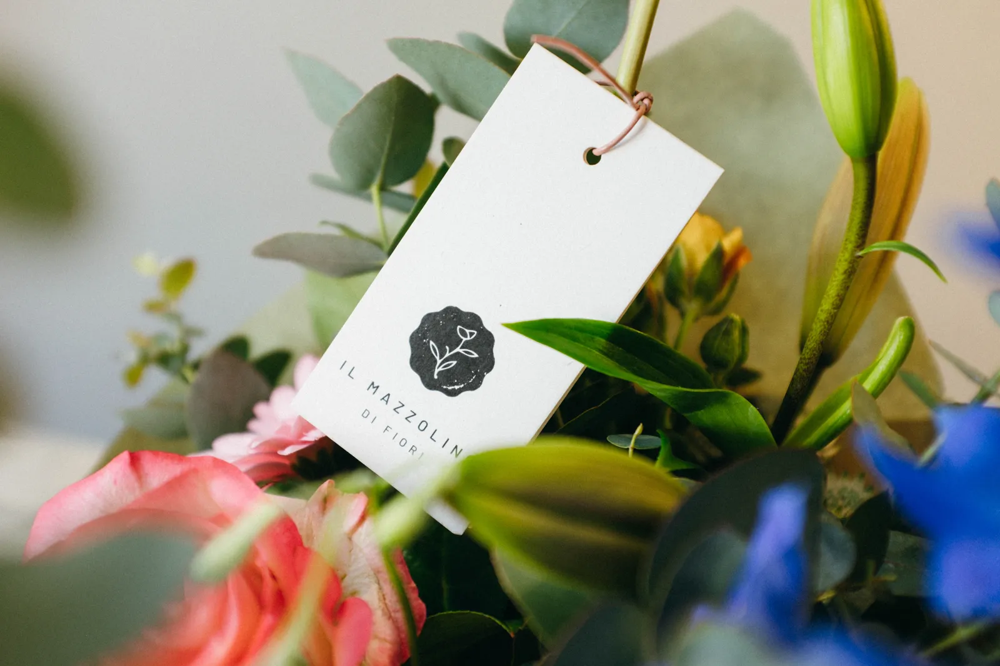

Trouwen
Het bruidsboeket en boeketjes voor op de tafels, in de kleuren van jullie dag.
"Mijn trouwboeket hier gekocht. Lene heeft hier een prachtig exemplaar van gemaakt. Mijn bruid was héél tevreden!"Joris Lehaen, op Google
Lene maakt elk boeket met de hand, met wat het seizoen die week brengt. Voor je moeder, je trouwdag, je eigen tafel of gewoon voor jezelf op een dinsdag. Jij kiest de stijl en het bedrag.


We werken niet met een vaste prijslijst. Jij zegt wat je wil uitgeven, wij maken er het mooiste boeket van dat we voor dat bedrag kunnen maken. Afhalen in de winkel of laten leveren.
Zo werkt ons bestelformulier. Mailen of bellen kan net zo goed.



2. Gewenste prijsJij kiest het bedrag.
3. Afhalen of leverenIn de winkel, of bij iemand aan de deur.

"Iets prijziger dan een doorsnee winkel, maar ik betaal graag voor dat tikkeltje extra."Een klant, op Google
Voor een boeket de deur uitgaat, zetten we het vaak nog even op het smeedijzeren tafeltje voor de oude kalkmuur. Zo zie je op Instagram meteen hoe wild of hoe rustig het mag zijn, en waar je je eigen bestelling op kan afstemmen.




In 2020 nam Lene Il Mazzolino Di Fiori over. Sindsdien maakt ze er boeketten met kleur en lef, kleedt ze trouwfeesten en zaken aan en zorgt ze ook voor het grafwerk. Klanten schrijven over haar lach in hun reviews, en dat zegt genoeg.
In de winkel staan vazen en potten van DES POTS en La Soufflerie. Bij een mooi boeket past altijd wel een vaas.
Een bruidsboeket, tafelboeketjes voor het feest of een stuk om iemand te eren. Vertel wat je in gedachten hebt, dan maken we het zoals jij het voor ogen hebt.
Het bruidsboeket en boeketjes voor op de tafels, in de kleuren van jullie dag.
"Mijn trouwboeket hier gekocht. Lene heeft hier een prachtig exemplaar van gemaakt. Mijn bruid was héél tevreden!"Joris Lehaen, op Google

We kiezen bewust voor warme, vrolijke tinten. Bloemen die troosten door hun kleur en hun licht.
"Top service, zeer vriendelijk en natuurlijk een prachtig boeket gemaakt ter eren van mijn grootouders diamanten bruiloft."Valerie Motmans, op Google
"Ik word elke keer opnieuw blij van mijn boeketten. Dit is echt zon plek die je spontaan aan vrienden wilt aanraden én graag deelt op Instagram, gewoon omdat alles er zo mooi en stijlvol uitziet."
Julia Trila op Google"Voor onze trouw hebben we een bruidsboeket en boeketjes voor op de tafels besteld. Ze waren allemaal prachtig, gemaakt met betoverende verse bloemen."
Karo B. op Google"Chapeau voor die service en toewijding! Mijn enige teleurstelling is dat ik maar 5 sterren kan geven, want dit is topklasse!"
Leander Housen op GoogleKom binnen, ruik even en kies ter plaatse. Liever op voorhand bestellen kan altijd, via mail of telefoon.
011 26 29 65 · info@ilmazzolino.be

Ik maakte deze demo voor jullie om te tonen wat er kan. Na een kort gesprek maak ik er iets veel persoonlijkers van, helemaal naar jullie wens.
Vrijblijvend. Ik kom langs of we bellen.
Op maat, op jullie eigen domein.
Geen voorschot. Jullie betalen pas als alles klaar is.
Hosting, domeinnaam en kleine wijzigingen, zoals nieuwe openingsuren.
Omdat een voorbeeld meer zegt dan een mail. Zo zien jullie meteen wat er kan, en het kost jullie niets.
Nee. Het gesprek is vrijblijvend. Vinden jullie het niks, dan is het daarmee gedaan.
Na ons gesprek staat jullie site binnen 10 tot 14 dagen online.
Zeker. Jullie domeinnaam kan gewoon blijven, de nieuwe site komt in de plaats van de oude.
Nee, dat doe ik op basis van ons gesprek. Eigen foto's zijn mooi meegenomen, maar niet nodig om te starten.